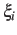
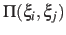
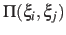
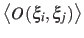
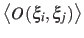

Statistical analysis of collective variables
When the global keyword analysis is defined in the
configuration file, run-time calculations of statistical properties for
individual colvars can be performed. At the moment, several types of
time correlation functions, running averages and running standard
deviations are available.
-
corrFunc
 Calculate a time correlation function?
Calculate a time correlation function?
Context: colvar
Acceptable values: boolean
Default value: off
Description: Whether or not a time correlaction function should be calculated
for this colvar.
-
corrFuncWithColvar Colvar name for the correlation function
Context: colvar
Acceptable values: string
Description: By default, the auto-correlation function (ACF) of this colvar,
, is calculated. When this option is specified, the
correlation function is calculated instead with another colvar,
 , which must be of the same type (scalar, vector, or
quaternion) as .
, which must be of the same type (scalar, vector, or
quaternion) as .
-
corrFuncType Type of the correlation function
Context: colvar
Acceptable values: velocity, coordinate or
coordinate_p2
Default value: velocity
Description: With coordinate or velocity, the correlation
function
 =
=
 is calculated between
the variables and , or their velocities.
 is the scalar product when calculated
between scalar or vector values, whereas for quaternions it is the
cosine between the two corresponding rotation axes. With
coordinate_p2, the second order Legendre polynomial,
is calculated between
the variables and , or their velocities.
 is the scalar product when calculated
between scalar or vector values, whereas for quaternions it is the
cosine between the two corresponding rotation axes. With
coordinate_p2, the second order Legendre polynomial,
 , is used instead of the cosine.
, is used instead of the cosine.
-
corrFuncNormalize Normalize the time correlation function?
Context: colvar
Acceptable values: boolean
Default value: on
Description: If enabled, the value of the correlation function at  = 0
is normalized to 1; otherwise, it equals to
.
= 0
is normalized to 1; otherwise, it equals to
.
-
corrFuncLength Length of the time correlation function
Context: colvar
Acceptable values: positive integer
Default value: 1000
Description: Length (in number of points) of the time correlation function.
-
corrFuncStride Stride of the time correlation function
Context: colvar
Acceptable values: positive integer
Default value: 1
Description: Number of steps between two values of the time correlation function.
-
corrFuncOffset Offset of the time correlation function
Context: colvar
Acceptable values: positive integer
Default value: 0
Description: The starting time (in number of steps) of the time correlation
function (default: = 0). Note: the value at = 0 is always
used for the normalization.
-
corrFuncOutputFile Output file for the time correlation function
Context: colvar
Acceptable values: UNIX filename
Default value:  name.corrfunc.dat
name.corrfunc.dat
Description: The time correlation function is saved in this file.
-
runAve Calculate the running average and standard deviation
Context: colvar
Acceptable values: boolean
Default value: off
Description: Whether or not the running average and standard deviation should
be calculated for this colvar.
-
runAveLength Length of the running average window
Context: colvar
Acceptable values: positive integer
Default value: 1000
Description: Length (in number of points) of the running average window.
-
runAveStride Stride of the running average window values
Context: colvar
Acceptable values: positive integer
Default value: 1
Description: Number of steps between two values within the running average window.
-
runAveOutputFile Output file for the running average and standard deviation
Context: colvar
Acceptable values: UNIX filename
Default value: name.runave.dat
Description: The running average and standard deviation are saved in this file.
Jérôme Hénin
2015-03-03